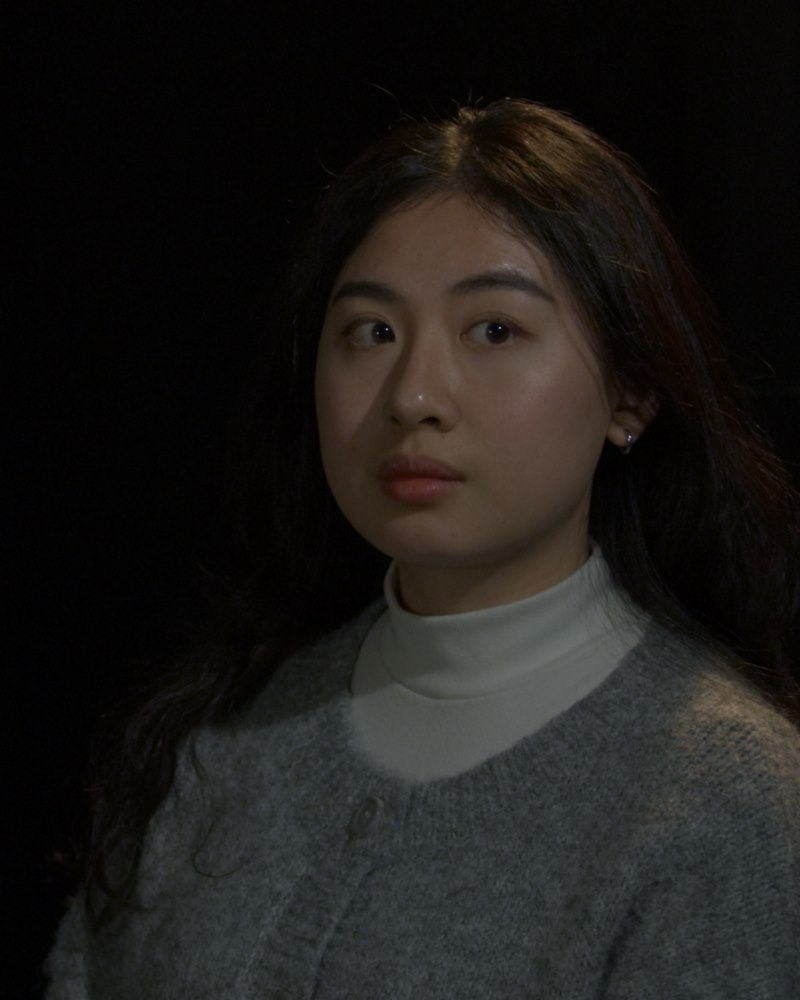

3D Generalist / Technical Artist · Taoyuan
讓畫面 動起來 說故事。
專精燈光、LookDev 與渲染，熟悉 Houdini 與 USD 製作流程。
用光影與節奏，把想法變成會呼吸的畫面。
013D 作品
022D 作品
03關於我

嗨，我是 吳淇芃（ChiPeng Wu），一名 3D Generalist / Technical Artist，也是多媒體動畫師。
我畢業於紐西蘭維多利亞大學（Victoria University of Wellington），取得設計科技碩士（Master of Design Technology）；大學就讀台灣銘傳大學數位媒體設計學系。專長是燈光與渲染，擅長寫實燈光、PBR 流程與 MetaHuman，並特別在意光線如何塑造畫面的氛圍與質感。
在 5 分鐘團隊動畫短片《The Protector》中，我在 USD 流程裡負責 LookDev、燈光、場景組裝與品質控管，也擔任 Layout 與 Lighting 部門之間的技術橋樑。我也參與 MetaHuman 研究，探討從 Unreal Engine 轉換到 Houdini 時，如何透過燈光與材質調整維持寫實感，研究已投稿 SIGGRAPH。
2025–26維多利亞大學 設計科技碩士
2020–24銘傳大學 數位媒體設計
SIGGRAPHMetaHuman 研究投稿
- 燈光
- LookDev
- 渲染優化
- USD 流程
- 場景組裝
- 3D
- MG 動畫
- 剪輯